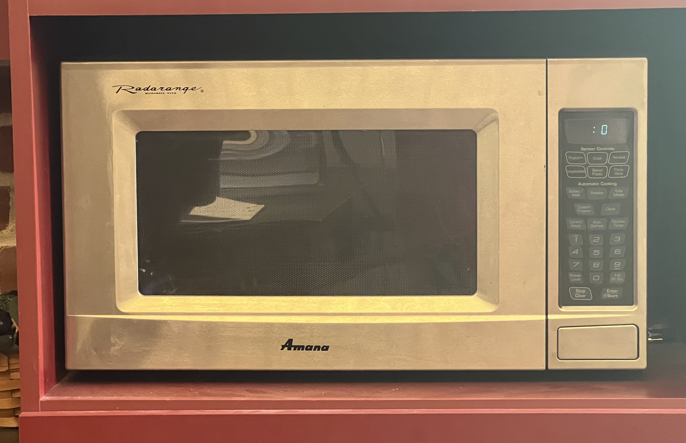

Amana Touchmatic Radarange
The first microprocessor control panel on a household appliance — cooking becomes programming

Overview
The Amana Radarange was the home microwave oven line of Amana Refrigeration, Inc., of Amana, Iowa — a Raytheon subsidiary since 1965. Its early-1970s models (RR-4, RR-4D) used analog timers and mechanical knobs. In 1974 Amana added automatic defrost to the RR-4D; then, per the standard account (including Wikipedia's Microwave oven article), Amana was the first to offer a microprocessor-controlled digital control panel in 1975 with the RR-6 — the "Touchmatic" Radarange.
The Touchmatic replaced the dials and switches with a solid-state microprocessor, a digital touch keypad, and a bright digital clock/display, letting the user key in cook times, defrost cycles, and (on later models) staged cooking and temperatures. The line shipped through the late 1970s and early 1980s; a 1978 RR5-6 unit is preserved by the Science Museum Group (co8062000). The analog predecessors (ca. 1974) are preserved by the Smithsonian and The Henry Ford, bracketing the transition this artifact marks.
Deep dive
Until 1975 a microwave user operated a mechanical timer and a knob. The Touchmatic replaced that layer with a microprocessor and a digit keypad: press keys to set a cook time, defrost time, or sequence; the digital display counts down; the oven beeps when done. Instead of turning a dial until it pointed at a number, the user wrote a short program — time, power, stage — that the machine executed against the physical process of heating food. The microwave became the first computing appliance most households ever owned.
Microprocessor control allowed operations a mechanical timer could not express: defrost-then-cook, timed hold, temperature probes. The user composes a sequence on the membrane keypad, the display confirms it, and the magnetron runs through the program — a miniature command line to a heat engine, wrapped in consumer packaging.
Though the RR-6 debuted in 1975, the Touchmatic line was sold throughout the 1976-1992 window, and a 1978 RR5-6 is preserved by the Science Museum Group in London. It is the museum's closest relative, in the most ordinary setting, of the TNC 110 (machine-tool interrogator), the Tektronix 7854 (lab instrument), and the Buick Riviera GCC (automotive dashboard) — the same boundary crossing, "a computer's brains entered a machine that does physical work."